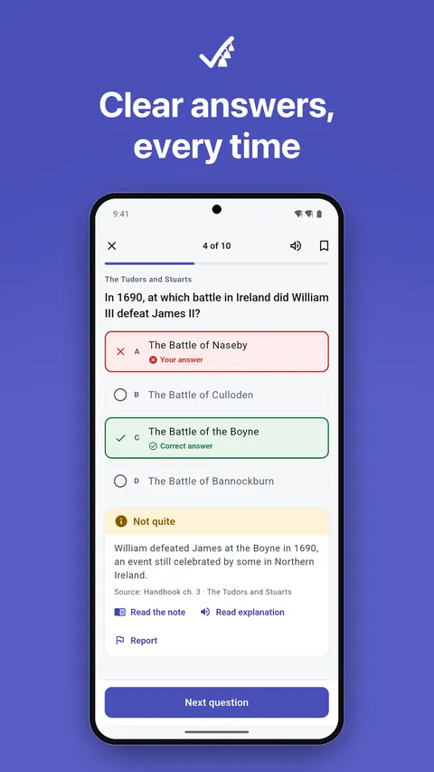

Not a government app. Bluebell is an independent study app made by Kodfu Bilisim. It does not represent the Home Office, UK Visas and Immigration or any government body, and it is not affiliated with or endorsed by them or by TSO.
Life in the UK practice: Chapter 3, A long and illustrious history
Free, with no sign-up and nothing saved. These 10 questions are original, written from the facts in the handbook. No app or website can show you the real test questions.
What this chapter covers
Chapter 3 tells the story of Britain from its first people to modern times. It is full of names, places and dates, so it helps to link each one to what happened and why it mattered. The questions below take in every period of the chapter.
- Early Britain: the Stone Age, the Romans, the Anglo-Saxons and Vikings, up to the Norman Conquest of 1066.
- The Middle Ages, 1066 to 1485: wars, Magna Carta, the growth of Parliament, the Black Death and the Wars of the Roses.
- The Tudors and Stuarts: the Reformation, Elizabeth I, the Civil War, the Restoration, the Glorious Revolution and the union with Scotland.
- A global power: the Enlightenment, the Industrial Revolution, the empire, the Victorians and reform.
- The 20th century to 1945: the First World War, votes for women, the years between the wars and the Second World War.
- Britain since 1945: the welfare state, migration, social change, Europe, devolution and modern inventions.
Question 1 · True or false?
For much of the Stone Age, Britain was joined to mainland Europe by a land bridge.
- True
- False
Show the answer
Answer A: True
A land bridge linked Britain to the continent, so people could follow herds of animals across it.
Source: Handbook ch. 3 · Early Britain
Question 2 · Choose one answer
Where is Skara Brae, the best-preserved prehistoric village in northern Europe?
- Anglesey, off the coast of Wales
- Orkney, off the north coast of Scotland
- County Antrim in Northern Ireland
- The Isle of Wight, off southern England
Show the answer
Answer B: Orkney, off the north coast of Scotland
Skara Brae is on Orkney. Its stone houses survived because sand covered them for centuries.
Source: Handbook ch. 3 · Early Britain
Question 3 · Choose one answer
Which king passed the Statute of Rhuddlan, bringing Wales under the English Crown?
- Henry VIII
- Richard III
- King John
- Edward I
Show the answer
Answer D: Edward I
Edward I passed the Statute of Rhuddlan in 1284 and built castles to control Wales.
Source: Handbook ch. 3 · The Middle Ages
Question 4 · Select TWO answers
Which of these castles were built in Wales in the Middle Ages to keep control of the country? Select TWO.
- Windsor
- Edinburgh
- Conwy
- Caernarfon
Show the answer
Answer C: Conwy, D: Caernarfon
Conwy and Caernarfon were built in Wales for Edward I. Edinburgh Castle is in Scotland and Windsor is in England.
Source: Handbook ch. 3 · The Middle Ages
Question 5 · Choose one answer
Which of Henry VIII's wives was the mother of his son, Edward?
- Anne Boleyn
- Jane Seymour
- Anne of Cleves
- Catherine of Aragon
Show the answer
Answer B: Jane Seymour
Jane Seymour gave Henry the son he wanted, Edward, but died soon after the birth.
Source: Handbook ch. 3 · The Tudors and Stuarts
Question 6 · Choose one answer
Who is usually regarded as the first Prime Minister?
- Oliver Cromwell
- William Pitt
- Sir Robert Walpole
- The Duke of Wellington
Show the answer
Answer C: Sir Robert Walpole
Sir Robert Walpole was the first person called Prime Minister, serving from 1721 to 1742.
Source: Handbook ch. 3 · A global power
Question 7 · Choose one answer
At which battle in 1746 was Bonnie Prince Charlie defeated?
- The Boyne
- Waterloo
- Culloden
- Bannockburn
Show the answer
Answer C: Culloden
George II's army defeated Charles Edward Stuart at Culloden in 1746.
Source: Handbook ch. 3 · A global power
Question 8 · Choose one answer
In 1918, which women gained the right to vote?
- All women over 18
- Only women who had served in the war
- Only married women
- Women over the age of 30
Show the answer
Answer D: Women over the age of 30
In 1918 women over 30 gained the vote and the right to stand for Parliament.
Source: Handbook ch. 3 · The 20th century
Question 9 · Select TWO answers
Which of these did the Labour government take into public ownership after 1945? Select TWO.
- Supermarkets
- The coal mines
- Newspapers
- The railways
Show the answer
Answer B: The coal mines, D: The railways
The railways, coal mines and gas, water and electricity supplies were nationalised.
Source: Handbook ch. 3 · Britain since 1945
Question 10 · Choose one answer
What did the Beveridge Report of 1942 recommend?
- Tackling five Giant Evils such as want and disease
- Joining the European Economic Community
- Building a railway tunnel under the Channel to France
- Giving women the vote
Show the answer
Answer A: Tackling five Giant Evils such as want and disease
William Beveridge's report called on the government to fight five Giant Evils, laying the basis of the welfare state.
Source: Handbook ch. 3 · Britain since 1945
You’ve seen 10 of 367 questions in Chapter 3
The Bluebell app has all 367, each with an explanation. Across the whole Life in the UK there are 942 questions in 17 topics, plus timed 24-question mock tests of 45 minutes.
36 of them are free in the app, the rest come with Pro. Bluebell Pro is £6.99 one-off: every question, every mock test and every study note. No subscription.
Android now; iPhone version not yet available.
Dates worth anchoring
- 1066: William of Normandy defeats King Harold at the Battle of Hastings, and the Norman Conquest begins.
- 1215: Magna Carta. King John accepts that even the king is subject to the law.
- 1485: Richard III is killed at Bosworth Field and Henry Tudor becomes Henry VII.
- 1534: Henry VIII breaks with Rome and heads a new Church of England.
- 1707: The Act of Union makes England and Scotland the Kingdom of Great Britain.
- 1832: The Reform Act lets more men vote and abolishes rotten boroughs.
- 1918: The First World War ends at 11am on 11 November, and women over 30 gain the vote.
- 1948: The National Health Service is created, led by Aneurin Bevan.
Keep going
- Chapter 1: The values and principles of the UKBritish values, freedoms, citizenship · 10 questions
- Chapter 2: What is the UK?The four countries and what the names mean · 5 questions
- Chapter 4: A modern, thriving societyUK cities, customs, sport, arts and places · 10 questions
- Chapter 5: The UK government, the law and your roleParliament, the law and taking part · 10 questions
- Life in the UK Test guideFormat, booking, what to bring and the day itself
Want more practice? Get the Bluebell app
942 original practice questions across all five chapters of the handbook, plain-English explanations, full mock tests of 24 questions in 45 minutes, spaced review and a mistakes list. It works offline, with no ads and no account.



Free: Chapter 1 in full, six free questions in every other topic, two full mock tests and all the tools.
Bluebell Pro, £6.99 one-off: every question, every mock test and every study note. No subscription.
Android now; iPhone version not yet available. Bluebell helps you prepare; it cannot promise a pass.
Official sources
Check these public pages before you book or apply.
- Life in the UK Test (GOV.UK)
- What happens at the test and the pass mark (GOV.UK)
- The handbook and study materials (the shop linked from GOV.UK)
- Book the test (the booking service linked from GOV.UK)
Bluebell's guides are general information, not immigration advice.